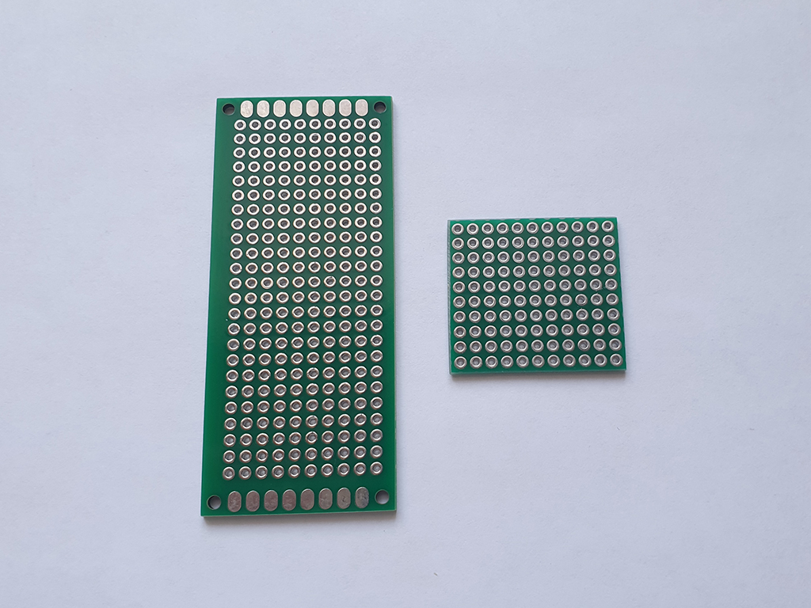

As an LED driver, both several board options and several options can be used their connections. At the moment, the author of HyperHDR has implemented a high-speed serial driver Adalight port for boards ESP32 / Esp8266 / Raspberry Pi Pico RP2040. There are also several ways connections: Wled (Wi-Fi), Usb port and SPI bridge. You can find all the methods in the author's repository (link). For each driver, the software installation process and boards recommended by the author are described for purchase (beware of fakes and look at product reviews on the store page).
HyperSerialWLED - wireless connection, there is a slight delay.
HyperSerialEsp8266 / HyperSerialESP32 / HyperSerialPico - Usb wire connection.
Lower latency compared to WLED.
It is recommended to use when there is a long distance from the Raspberry Pi to the microcontroller.
HyperSPI - connection using Dupont jumpers. Least delay.
Recommended if the distance from the Raspberry Pi to the microcontroller is 15-20 cm.
At the moment, the solution that is relevant in my case is connection via the SPI bridge, the "RP2040-Zero" controller
(link).
Archive of previous implementations of LED driver posted
(on this page).

Many 5v LED strips can operate without a level switch, especially if the cable between the controller and the LED strip is very short. However, flickering may sometimes occur, for example, the LEDs briefly flash white. More serious failures are also possible. When using 12 or 24v LED strips, a level switch is usually indispensable. However, for 5v LED strips, especially in industrial applications, it is also strongly recommended to use a level switch to ensure smooth operation. The level switch adapts the signal level of the microcontroller (3.3v) to the signal level of the LED strip (5v for all types of addressable LEDs).
The switch is based on the 'SN74LVC2T45' chip (link).

Breadboard printed circuit boards are universal and indispensable elements for the purpose of quickly assembling circuits without the need to make your own printed circuit board (which complicates the project itself). For further assembly, a breadboard with dimensions of 3x7 cm (link) is suitable.
I decided to approach the assembly in a non-standard way, a board close in size and shortened it on all sides to the size I need (with end processing). In this case, it was more convenient for me personally, since the finished board itself will be as compact as possible.

In addition to the breadboard itself, we need additional elements:
- round pin header 2.54mm (type "Female") (link),
- board socket straight (9 pin, type "Female") (link),
- pin plug 2.54mm (type "Male") (link),
- capacitor 100 nf (link),
- resistor 100 Ohm (link),
- adapter board: SOP8, SOIC8, SSOP8 -> DIP8 (link),
- 4-pin connector RGBW / RGB (link),
- jumper-wire Dupont (type "Female-Female") (link).